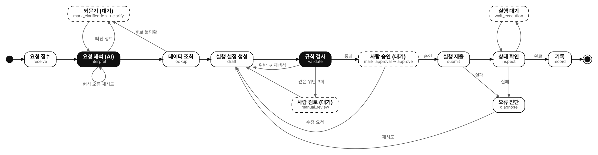

01 · SEQUORA
2026.08 – 2026.12 (진행 중)연구자가 ‘이 데이터로 유전자 발현 분석해 줘’처럼 말로 요청하면 AI가 분석 조건을 정리하고, 규칙으로 검사한 뒤, 사람이 확인하면 분석을 실행하는 도우미입니다. 이 중 AI가 들어가는 부분의 구현·성능 측정·개선을 맡았습니다.
Part 1AI 도우미 구현
요청 해석부터 검사·승인·실행까지 9단계 처리 흐름을 연결하고, 틀린 AI 답은 규칙으로 걸러 재시도합니다.
요청 접수~기록 연결. 진행·되묻기·재생성 분기, 승인 후 설정 변경 시 승인 무효
Ollama 모델 연결, 정해진 양식으로만 답하도록 제한
답 양식이 틀리면 다시 생성. 규칙 검사 탈락 시 설정 재생성, 같은 오류 3회면 사람 검토로 전달

규칙 검사 API와 분석 서버 연동은 팀원 담당이며, 연동 구조와 테스트 방식을 옆에서 보며 배웠습니다.
Part 2프롬프트 평가·개선
9단계 중 ② 요청 해석 · ③ 데이터 조회 구간을 따로 떼어 점수로 검증했습니다. (2026.10 – 11)
- 1차 해석 (AI)
요청에서 분석 종류·생물종·빠진 정보와 데이터 ‘언급’만 추출. 데이터 번호는 이 단계에서 정하지 않음
- 데이터 조회 (코드)
언급된 이름·별칭을 카탈로그에서 조회해 실제 후보 목록 생성. 후보가 없으면 한 번 더 조회
- 최종 확정 (AI + 규칙)
AI는 조회된 후보 안에서만 번호 선택. 목록에 없는 번호·빈 항목은 코드로 보정
실제처럼 쓴 요청 248개, 7묶음. 정보 누락·애매한 표현·모순·오타·AI를 속이려는 문장 포함
항목별 정답 비교. AI 원래 답과 규칙 보정 답을 분리 기록
문제별 답 원문·응답 시간·사용량 기록. 지시문 버전과 모델을 같은 조건에서 비교
실험 환경에서 측정한 결과입니다(실제 서비스 테스트 전). 점수가 떨어진 버전은 되돌렸고, 정답이 정해진 부분은 코드로 보정했습니다.
Part 3작은 모델 학습·양자화
크기가 비슷할 때, 큰 모델을 양자화해 줄인 것과 처음부터 작은 모델 중 어느 쪽이 더 잘하는지 비교했습니다. Qwen3 · MLX · 모든 모델 같은 LoRA 설정, 같은 시험 문제 32개 · 실습용 소규모 데이터.
4B를 2·3·4bit로 양자화 → 학습 전 기본 비교 → 원본 LoRA 그대로 붙이기 → 양자화 모델 위 QLoRA 학습 → 0.6B 원본과 비교
QLoRA·RsLoRA·QDoRA·QPiSSA를 같은 문제로 비교. 학습 오차(loss)가 낮아도 정답이 높지는 않아 실제 과제 기준 채점으로 판단
1–2GB 구간에서 4B 양자화와 0.6B 원본의 차이는 1문제 수준. 메모리를 1/4로 줄인 4B도 원본과 같은 정답 수
양자화한 모델은 그 위에서 다시 학습 필요(원본용 LoRA를 그대로 붙이면 성능 붕괴). 어려운 문제는 여전히 원본이 우세. 실제 사용할 Ollama 형식과 더 많은 문제로 다시 확인 필요